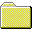
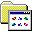

win95.css — component preview
My Computer
_
□
✕
Active window. The titlebar uses the navy gradient.
OK
Default
Pressed
Disabled
Ready
2 object(s)
Untitled — Notepad (inactive)
_
□
✕
Name
Sunken textarea well.
Tableau
Power BI
Checkbox
Radio

Bevels & Menu
_
□
✕
F
ile
E
dit
V
iew
H
elp
Group
Fieldset content well.
Sai Teja
95
About Me
My Work

Skills
LinkedIn
Desktop icons
_
□
✕
About Me
My Work
Contact
All icons (32px)
_
□
✕
Start
My Computer
Contact
10:36 AM